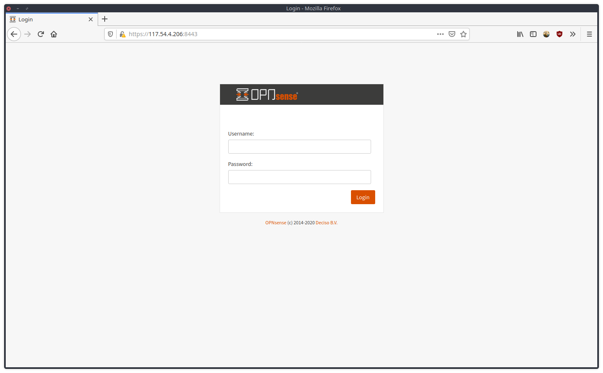

OPNsense adalah proyek firewall berbasis open source berbasis FreeBSD OPNsense.

Berikut adalah tutorial untuk mengkonfigurasi HAProxy di OPNsense.
1. Konfigurasi Firewall untuk HAProxy#
- Buat 2 IP Forward pada konfigurasi firewall
- Firewall > NAT > Port Forward > + New Rule
Interface : LAN
TCP/IP Ver : IPv4
Protocol : TCP
Source : any
Destination port range : From - HTTP , to - HTTP
Redirect target IP : #IPADDRESSOPNSENSE
Redirect target port : HTTP
SAVE
Interface : LAN
TCP/IP Ver : IPv4
Protocol : TCP
Source : any
Destination port range : From - HTTPS , to - HTTPS
Redirect target IP : #IPADDRESSOPNSENSE
Redirect target port : HTTP
SAVE- Buat Rule Floating
- Firewall > Rules Floating > + New Rule
Action : Pass
Interface : LAN
Direction : in
TCP/IP ver : IPv4
Protocol : TCP
Source : any
Destination : Lan Address
Destination port range : From - HTTP , to - HTTP
Action : Pass
Interface : LAN
Direction : in
TCP/IP ver : IPv4
Protocol : TCP
Source : any
Destination : Lan Address
Destination port range : From - HTTPS , to - HTTPS2. Konfigurasi HAProxy#
- Service > HAProxy > Setting
Tambahkan Server#
Real Servers > Real Servers > + add
Name : test-http
FQDN or IP : #IPPUBLICSERVER
Port : 80
SAVETambahkan Backend Pool#
Virtual Services > Backend Pool > + add
Name : test_http
Mode : Layer 7
Servers : test-http
SAVETambahkan Conditions#
Rules and Check > Conditions > + add
Name: test-http
Condition type : Host Matches
Host String : test-httpTambahkan Rules untuk frontend 443#
Rules and Check > Rules > + add
Name : pass_https_test_http
Select Condition : test-http
Execute function : Use specified Backend Pool
Use backend pool : test_httpTambahkan Rules untuk frontend 80 (untuk redirect traffic ke https)#
Rules and Check > Rules > + add
Name : redirect_to_https_http_test_nicolas_my_id
Select Condition : test-http_nicolas_my_id
Execute function : http-request redirect
HTTP Redirect : scheme httpsTambahkan frontend untuk port 80#
Virtual Services > Public Services > + add
Name : FrontEndHTTP
Listent address : 0.0.0.0:80
Select Rules : redirect_to_https_httpTambahkan frontend untuk port 443#
Virtual Services > Public Services > + add
Name : FrontEndHTTPS
Listent address : 0.0.0.0:443
Enable SSL offloading : (✓)
Certificates : test-http # Pastikan sertifikat sudah di-import ke OPNsense
Select Rules : pass_https_test_http